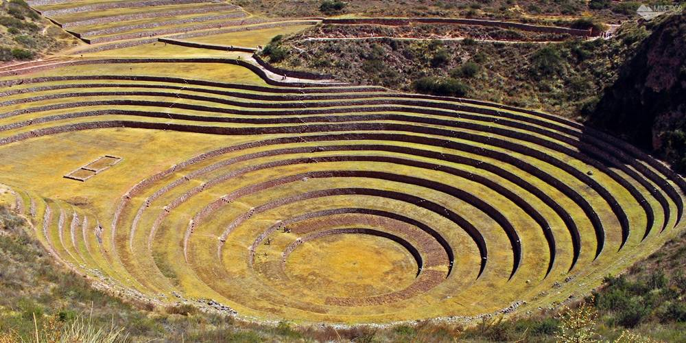

Ponto 1 - Peru
Para começar, após arrumar nossas malas pegariamos um avião em algum aeroporto em Curitiba e iriamos voar direto para Cusco, Peru, o que demoraria cerca de 13 Horas.
Ao lá, iriamos a um hotél que reservamos, e provavelmente no primeiro dia a gente iria usar o resto do dia no hotel, aproveitando a comida e as piscinas.
No resto dos dias nós iriamos aproveitar mais o país, como por exemplo, visitando e conhecendo a capital de Peru, Lima.
Também comeriamos algumas comidas tipícas, como Pachamanca e o Anticuchos, mas claro, não podemos esquecer o principal, visitar Machu Picchu e os vilarejos do Vale Sagrado!

Passado os dias, no sexto dia seguiriamos de avião até a próxima parada: Caribe!